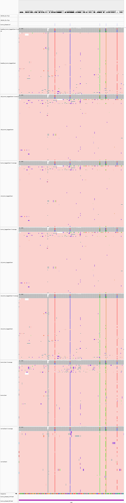

位點鐵證: chr19:27M baseline priority bug → V6 修對
Priority bug fix site: chr19:27M baseline → V6 corrected
⚠ SP1/2/3 屬 germline-absent (V6 退 hp=33)；本位點屬 germline-existent priority bug 區(V6 修對翻方向) — 補完 V6 鐵證的另一面
📊 chr19:27,376,222 ±100bp HP tag 分布 (samtools 實證):
| HP tag | baseline | V6 ★ | paired_T |
|---|
| HP:i:1 / HP:Z:1 | 90 | 90 | 3 |
| HP:i:2 / HP:Z:2 | 133 | 133 | 8 |
| HP:i:11 (HP1+somatic) | 106 | 36 | — |
| HP:i:21 (HP2+somatic) | 2 | 26 | — |
| HP:i:33 (ambiguous) | 0 | 46 | — |
| HP:Z:1-1 (paired HP1+som) | — | — | 33 |
| HP:Z:2-1 (paired HP2+som) | — | — | 28 |
→ V6 改動拆 兩個獨立機制（對應 slide 06 vs slide 07）：
- 機制 A · Priority bug 修對 (slide 06): 26 reads hp=11 → hp=21 翻方向（germ+som mix victim）；V6 26 ≈ paired_T HP:Z:2-1 28 量級對齊
- 機制 B · Layer 1.5 revert 保守 (slide 07): 46 reads hp=11 → hp=33 退守（germline-absent 純 somatic region）；paired_T 用 normal BAM 在此 46 reads 上能 directional，V6 (TO mode) 退守 ambiguous
- 其餘 36 reads HP:i:11 = priority bug 未觸發（germ HP1 主導+som）— baseline / V6 同方向
🔬 IGV 多版對照 (chr19:27,376,222 ±100bp):

panel 順序: baseline / V2b / V3F / V5 / V6 / paired tumor / paired normal
📊 跨 6 chr19 候選位點 baseline → V6 HP:i:11 reduction 視覺化:
→ baseline 106 hp=11 拆兩段獨立歸因: 26 reads = priority bug 修對（量級對齊 paired_T directional）+ 46 reads = Layer 1.5 revert 保守（paired_T 用 normal BAM 能 directional, V6 退 hp=33）；V6 ≠ paired-level，是 baseline 修對 + 保守 ambiguous